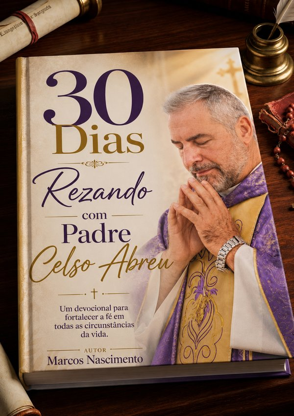

Preserve o legado, a vocação e as obras do sacerdote da sua comunidade em um livro biográfico inesquecível. Ao adquirir a obra, você também transforma vidas através das ações sociais da paróquia.
Quero Homenagear Nosso PárocoNo batismo de um filho, no conforto de um luto ou na orientação de momentos difíceis, os sacerdotes doam suas vidas com amor. Contudo, a rotina pastoral muitas vezes impede que suas histórias e frutos sejam devidamente registrados. A verdadeira recompensa deles vem do Céu, mas a gratidão cabe à nossa comunidade.
Oferecemos diferentes formatos de obra, com propósitos distintos, mas igualmente capazes de eternizar o legado espiritual do sacerdote.
Livro de Homenagem
Registra a trajetória, a vocação e os testemunhos da comunidade sobre a vida e o ministério do sacerdote.
Estudo Doutrinário
Reúne ensinamentos, reflexões teológicas e catequéticas do padre, com foco na doutrina em vez de sua história pessoal.
Testemunho de Fé e Espiritualidade
Compartilha reflexões espirituais e experiências de fé do sacerdote, preservando sua privacidade pessoal.
Devocional
Reúne orações, meditações diárias e mensagens inspiradas na espiritualidade do padre, para fortalecer a fé dos fiéis.
Coletânea de Homilias e Reflexões
Reúne as próprias palavras do padre — homilias, reflexões dominicais e pregações marcantes — dando voz a ele mesmo, sem expor sua vida pessoal.
Álbum Comemorativo de Jubileu
Celebra datas especiais, como bodas de ordenação, através de fotos e registros dos marcos mais importantes do ministério sacerdotal.
Preserve para sempre a história de vida, a vocação e os testemunhos mais marcantes do seu sacerdote, antes que se percam no tempo.
Transforme sua contribuição em caridade, benfeitorias e evangelização direta para a sua própria paróquia.
Inspire jovens e crianças da sua comunidade a ouvir o chamado vocacional através de um exemplo de vida real.
Os números mostram a imensa responsabilidade carregada pelo clero no Brasil:
Proporção de padres por habitantes no Brasil
Sacerdotes para guiar mais de 180 milhões de fiéis
Do clero está concentrado na Região Sudeste
Entrevistas com o sacerdote, paroquianos e familiares.
Escrita e revisão com cuidado biográfico e teológico.
Pré-lançamento e Lançamento oficial junto à comunidade.
Recursos direcionados para projetos sociais da paróquia.
Projetos de homenagem já realizados mostram como é possível transformar a história de um sacerdote em uma obra que fortalece a fé de toda uma comunidade.

Projeto já realizadoUm devocional que fortalece a fé em todas as circunstâncias da vida, eternizando a história e o carisma de um sacerdote através da palavra escrita.
O exemplo acima já foi realizado — e essa mesma homenagem pode eternizar a história do sacerdote que também marcou a sua vida e a da sua comunidade. Cada dia que passa é uma história, um testemunho e uma lição que corre o risco de se perder no tempo.
Fale agora com a nossa equipe pelo WhatsApp e descubra como começar essa homenagem hoje mesmo:
📱 Falar no WhatsApp AgoraOu escolha como você deseja apoiar esta missão:
Reserve seu exemplar e contribua diretamente com as ações sociais da paróquia.
Seja benfeitor do projeto e associe sua marca a uma causa de alto impacto social e cultural.
Ajude na coleta de depoimentos, pesquisas e divulgação na sua comunidade.